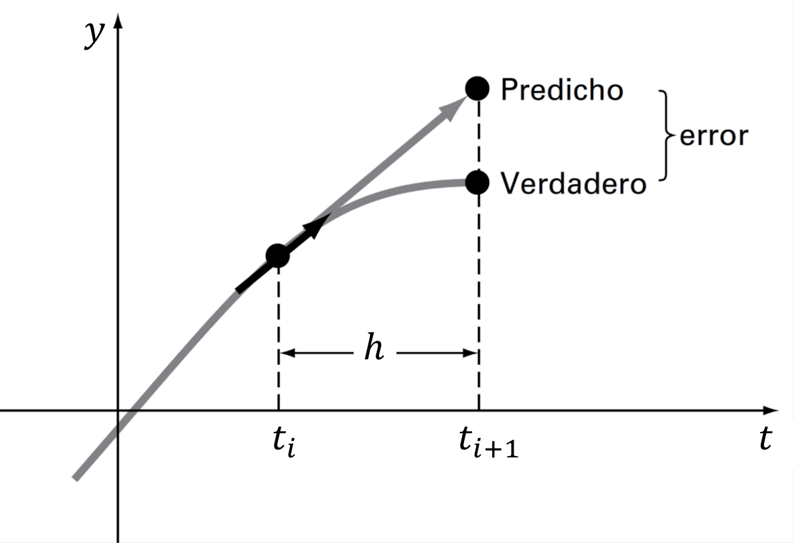
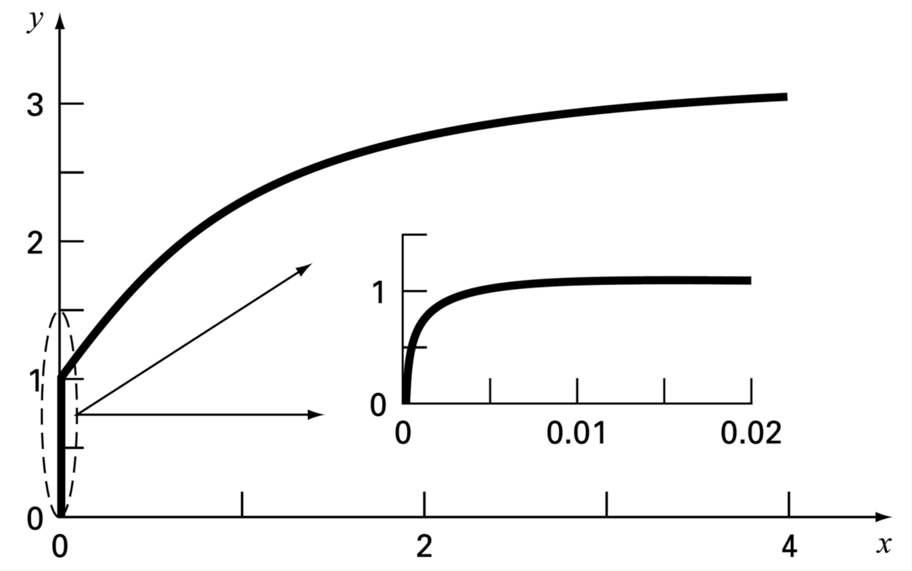

Ecuaciones Diferenciales Ordinarias con valor inicial
Contents
MEC301 - Métodos Numéricos
9. Ecuaciones Diferenciales Ordinarias con valor inicial#
Profesor: Francisco Ramírez Cuevas
Fecha: 24 de Octubre 2022
9.1. Introducción#
Las ecuaciones diferenciales son utilizadas para modelar sistemas en todos los campos de ciencia e ingeniería.
Como definición general, un sistema de ecuaciones diferenciales define la relación entre variables dependiente, \(f_1(x_1,x_2,x_3, \cdots), f_2(x_1,x_2,x_3, \cdots), \cdots\), las variables independientes \(x_1,x_2,x_3, \cdots\), y sus derivadas.
9.1.1. Clasificación de ecuaciones diferenciales#
El sistema puede estar compuesto de una ecuacion diferencial.
Por ejemplo, la ecuación del péndulo que define la variación temporal del ángulo \(\Theta\) en función del tiempo \(t\):
donde \(g\) es la gravedad, \(m\) la masa del péndulo, \(l\) es la distancia al centro de rotación y \(\kappa\) es una constante a amortiguación asociado al arrastre por el viento
{kind=link}
En este caso tenemos una variable dependiente (\(\Theta\)), y una variable dependiente (\(t\)).
Este tipo de ecuaciones se conoce como ecuación diferencial ordinaria (EDO), debido a que la varible dependiente está condicionada por una variable independiente. Adicionalmente, debido al término \(\sin\Theta\), esta ecuación corresponde a una EDO no-lineal.
Si el ángulo de oscilación, \(\Theta\), es pequeño, podemos hacer la simplificación \(\sin \Theta\approx \Theta\).
En este caso la EDO se transforma a una ecuación del tipo lineal:
En general, las EDO lineales tiene solución analítica.
También podemos tener una ecuación diferencial definida para una variable dependiente y multiples variables independientes.
Un buen ejemplo es la ecuación de difusión de calor, que describe la distribución de temperatura en función del tiempo, \(t\), y el espacio. En el caso 2D:
donde \(\rho\) es la densidad, \(c_p\) es el calor específico, y \(k\) es la conductividad térmica
En el caso de más de una variable independiente, la llamamos ecuación diferencial parcial (EDP)
En este caso, la EDP es del tipo lineal
Por último, en el caso de más de una variable dependiente, podemos tener sistemas de ecuaciones diferenciales del tipo EDO o EDP.
Tal es el caso de la ecuación de Navier-Stokes utilizada en mecánica de fluidos para modelar un problema en dos dimenciones:
En este caso tenemos un sistema de 3 EDPs no-lineales definido para tres funciones \(u\), \(v\) y \(p\) en función del tiempo \(t\) y el espacio \(x\) e \(y\). Donde \(u(t,x,y)\) y \(v(t,x,y)\) son, respectivamente, el campo de velocidad en dirección \(\hat{x}\) y \(\hat{y}\); y \(p(t,x,y)\) es el campo de presiones. Nuevamente, \(\rho\), es la densidad del fluido.
También podemos clasificar una ecuación diferencial según el orden de sus derivadas.
Por ejemplo, la ecuación:
Es una EDO de segundo orden, debido a que \(\Theta\) es derivada dos veces respecto a \(t\).
9.1.2. Condiciones de borde y condiciones iniciales#
Las ecuaciones diferenciales presentadas anteriormente representa una formulación general asociada a un fenómeno físco (movimiento de un péndulo, distribución de temperaturas o movimiento de un fluido). Sin embargo, estas ecuaciones no están condicionadas a un problema en específico y, por lo tanto, su solución es definida en base a constantes de valor arbitrario.
Por ejemplo, la versión lineal de la EDO del péndulo tiene como solución general:
Para asociar una ecuacion diferencial a un problema específico necesitamos condiciones de borde o condiciones iniciales
Usamos condiciones iniciales si la variable dependiente evoluciona respecto a la variable independiente.
Por ejemplo, en el caso del péndulo, \(\Theta\) evoluciona respecto al tiempo, \(t\), y por lo tanto necesitamos de condiciones inciales.
Como condición inicial, por ejemplo, asumamos que el péndulo está en reposo con un ángulo \(\Theta_0\):
Ecuación gobernante
Condiciones iniciales
El número de condiciones iniciales debe ser igual al número de derivadas de la variable independiente.
Comúnmente, las condiciones iniciales están asociadas a la variable tiempo. Sin embargo, una condición inicial puede también estar asociada a una variable espacial (por ejemplo, una vibración propagandose en el espacio).
Usamos condiciones de borde si la variable dependiente está condicionada por diversos puntos de una variable dependiente.
Por ejemplo, la distribución de temperaturas de una placa cuadrada de largo \(L\), incialmente a temperatura \(T_a\), con temperaturas en \(T_h\) y \(T_c\) en los bordes izquierdo y derecho, y tempertura \(T_0\) en la parte superior e inferior, está descrita por la ecuación:
Ecuación gobernante
Condiciones de borde
condición inicial
El número de condiciones de borde debe ser igual al número de derivadas respecto a la variable independiente
Las condiciones de borde están, generalmente, asociadas a variables en el espacio
9.2. Aspectos generales de los métodos numéricos para solución de ODEs#
9.2.1. Ecuación diferencial ordinaria (EDO) con valor inicial#
En forma general, podemos representar una EDO con valor inicial de la forma:
sujeta a las condiciones inciales: \(t = 0, f(0), f^{(1)}(0), f^{(2)}(0),\ldots, f^{(n)}(0)\)
Por ejemplo, en el caso de la ecuación del péndulo:
donde \( F(t,\Theta, \dot{\Theta}) = - \frac{g}{l}\sin \Theta - \frac{\kappa}{ml}\dot{\Theta} \)
Convenientemente, podemos reducir esta ecuación a un sistema EDO de primer orden:
En conclución, siempre podemos reducir una EDO a un problema de la forma:
con una condición inicial \(\vec{y}(0)\).
En el caso del péndulo,
9.2.2. Método de Euler#
Dada la condición inicial \(\vec{y}(t_0)\), supongamos que queremos determinar el valor de \(\vec{y}\) en un tiempo \(t_0 +\Delta t\).
La forma más sencilla es mediante una expansión de Taylor centrada en \(t_0\):
Truncando los términos de segundo y mayor orden tenemos:
Podemos seguir repetiendo este procedimiento para encontrar la evolución \(\vec{y}\) en el tiempo.
En su forma general, este método se conoce como el método de Euler explícito:
donde \(\vec{y}_{i+1} = \vec{y}(t_i + \Delta t)\), y \(h = \Delta t\)
Gráficamente, el método consiste en aproximar el valor de \(\vec{y}_{i+1}\) mediante una recta generada a partir de la derivada de \(\vec{y}\) en el punto \(t_i, \vec{y}_i\).
La pendiente de la recta está definida por \(\vec{F}[t_i,\vec{y}_i]\)
{kind=link}
Por ejemplo, consideremos la ecuación diferencial:
con condición inicial \(y(0) = -0.5\)
Utilicemos el método de Euler para resolver este problema en el intervalo \(t\in[0,1]\) con \(h = 0.1\) y \(h = 0.01\). Compararemos nuestra solución con la solución exacta \(y(t) = -\frac{1}{2}e^{-2t}\).
import numpy as np
# Define parameters
h = 0.1 # paso de tiempo
t = np.arange(0, 1+h, h) # lista de tiempos
# Ecuación diferencial
F = lambda t, y: np.exp(-2*t) # Ecuación gobernante dy = F(t,y)
y0 = -0.5 # Condición inicial
# solución exacta
y_exact = lambda t: -0.5*np.exp(-2*t)
# Método de Euler
y = np.zeros(len(t))
y[0] = y0
for i in range(len(t)-1):
y[i+1] = y[i] + h*F(t[i], y[i])
import matplotlib.pyplot as plt
plt.figure(figsize = (7, 5))
plt.rcParams.update({'font.size': 18}) # Tamaño de fuente
plt.plot(t, y, 'ro--', label='Euler')
plt.plot(t, y_exact(t), 'k', label='Solución exacta')
plt.title(r'Evaluación ecuación $\frac{dy}{dt} = e^{-2t}; y(0) = -0.5$')
plt.xlabel('t')
plt.ylabel('y(t)')
plt.grid()
plt.legend(loc='lower right')
plt.show()

En el ejemplo notamos que la aproximación mejora considerablemente si el valor de \(h\) disminuye. Esto es una consecuencia directa del error de truncamiento \(O(h^2)\)
Sin embargo, notamos que el error aumenta a medida que nos alejamos del valor inicial. Esta propagación del error ocurre porque el error de truncamiento nos entrega una estimación del error local, es decir, durante un solo paso del método.
Así, definimos:
Error de truncamiento local: Error del método para predecir la siguiente iteración (es decir, \(i\rightarrow i+1\)). Este error está asociado al truncamiento de la serie de Taylor.
Error de truncamiento global: Error por acumulación de errores de truncamiento local a lo largo de toda la iteración.
9.2.3. Estabilidad y precisión#
Asociamos el término precisión con el error de truncamiento del método.
Otro término relevante en los métodos de solución de EDOs es la estabilidad. Esta característica dice relación con el tipo de EDO y método utilizado para resolverla.
Analicemos el problema de estabilidad con la siguiente EDO:
con condición inicial \(y(0) = 0.5\)
Utilicemos el método de Euler para encontrar la solución en el intervalo \(t\in[0,1]\) con \(h = 0.1\) y \(h = 0.01\). Compararemos nuestra solución con la solución exacta \(y(t) = 0.5e^{-20t}\).
import numpy as np
# Define parameters
h = 0.09 # paso de tiempo
t = np.arange(0, 1+h, h) # lista de tiempos
# Ecuación diferencial
F = lambda t, y: -20*y # Ecuación gobernante dy = F(t,y)
y0 = 0.5 # Condición inicial
# solución exacta
y_exact = lambda t: 0.5*np.exp(-20*t)
# Método de Euler
y = np.zeros(len(t))
y[0] = y0
for i in range(len(t)-1):
y[i+1] = y[i] + h*F(t[i], y[i])
import matplotlib.pyplot as plt
plt.figure(figsize = (7, 5))
plt.rcParams.update({'font.size': 18}) # Tamaño de fuente
plt.plot(t, y, 'ro--', label='Euler')
plt.plot(t, y_exact(t), 'k', label='Solución exacta')
plt.title(r'Evaluación ecuación $\frac{dy}{dt} = e^{-2t}; y(0) = -0.5$')
plt.xlabel('t')
plt.ylabel('y(t)')
plt.grid()
plt.legend(loc='lower right')
plt.show()

Observamos que el método de Euler converge cuando \(h = 0.01\), pero oscila constantemente para \(h > 0.1\). En otras palabras, el método de Euler explícito presenta problemas de estabilidad.
Es posible demostrar que para ecuaciones del tipo \(\frac{dy}{dt} = -ay\), la condición de estabilidad del método de Euler explícito está dada por \(h > 2/a\).
En otras palabras, el método de Euler explícito es condicionalmente estable
Alternativamente, podemos definir el método de Euler implícito:
Esta formulación se define como implícita debido a que el valor futuro, \(\vec{y}_{i+1}\) se encuentra a ambos lados de la ecuación.
Para cada valor de \(\vec{y}_{i+1}\), debemos utilizar un método de solución de raices (por ejemplo, Newton-Raphson)
Revisemos el método de Euler implícito con el ejemplo anterior
import numpy as np
from scipy.optimize import fsolve
# Define parameters
h = 0.05 # paso de tiempo
t = np.arange(0, 1+h, h) # lista de tiempos
# Ecuación diferencial
F = lambda t, y: -20*y # Ecuación gobernante dy = F(t,y)
y0 = 0.5 # Condición inicial
# solución exacta
y_exact = lambda t: 0.5*np.exp(-20*t)
# Método de Euler
y = np.zeros(len(t))
y[0] = y0
for i in range(len(t)-1):
E_implicit = lambda yip1: yip1 - (y[i] + h*F(t[i+1], yip1))
y[i+1] = fsolve(E_implicit,x0 = y[i])
import matplotlib.pyplot as plt
plt.figure(figsize = (7, 5))
plt.rcParams.update({'font.size': 18}) # Tamaño de fuente
plt.plot(t, y, 'ro--', label='Euler implícito')
plt.plot(t, y_exact(t), 'k', label='Solución exacta')
plt.title(r'Evaluación ecuación $\frac{dy}{dt} = e^{-2t}; y(0) = -0.5$')
plt.xlabel('t')
plt.ylabel('y(t)')
plt.grid()
plt.legend(loc='lower right')
plt.show()

En el ejemplo, si bien la precisión sigue condicionada al error de truncamiento \(O(h^2)\), el método no presenta problemas de inestabilidad
En efecto, para ODEs de la forma \(\frac{dy}{dt} = -ay\), el métodod de Euler implícito es incondicionalmente estable.
En resumen, en la solución de una ODE debemos considerar la precisión y la estabilidad del problema. Si bien, la precisión está exclusivamente asociada al método, la estabilidad depende del método y la EDO a resolver.
En el ejemplo anterior fue posible cuantificar las condiciones de estabilidad debido a que la EDO era del tipo lineal. En general, no siempre es posible acotar la inestabilidad de forma analítica, especialmente para EDOs no lineales.
En la práctica, los términos precisión y estabilidad se confunden debido a que comúnmente ambos están asociados por \(h\). Sin embargo, cada uno es un aspecto independiente. Así, un método con poca precisión puede ser muy estable, y viceversa.
9.3. Métodos de paso simple (Runge-Kutta)#
Los métodos de Runge-Kutta (RK) permiten aumentar el número de términos de una serie de Taylor, sin la necesidad de calcular derivadas de mayor orden
Esto permite una mejor precisión, ya que el error de truncamiento local se reduce.
Existen muchas variaciones, todas asociadas a una aproximación de la forma:
donde \(\phi\) se conoce como función incremento, que representa una pendiente representativa del intervalo
En su forma general, la función incremento está dada por:
donde \(a_j\) son constantes, y los valores \(k_j\) son:
donde \(p_m\) y \(q_{m,n}\) son constantes.
Notar que los valores de \(k_j\) están definidos por recurrencia, es decir \(k_j\) depende de \(k_{j-1}, k_{j-2}, \cdots, k_{1}\)
Para obtener una formulación específica debemos especificar \(n\).
Una vez definido, los valores de \(a_j\), \(p_m\) y \(q_{m,n}\) se determinan igualando la expresión \(y_{i+1} = y_i + \phi h\) con los términos de la expansión de Taylor (más info acá):
Así, por ejemplo, la formulación para \(n = 1\) permite aproximar hasta la primera derivada de la serie de Taylor y, por lo tanto, tiene un error de truncamiento local \(O(h^2)\).
La formula RK1 corresponde al método de Euler explícito.
9.3.1. Runge-Kutta de segundo orden (RK2)#
La versión de segundo orden de RK es:
donde:
y las constantes \(a_1\), \(a_2\), \(p_1\) y \(q_{11}\), están dadas por:
Debido a que tenemos 3 ecuaciones y 4 incognitas, se debe acotar una de las variables para resolver el sistema
Así distinguimos:
Método de Heun (\(a_2 = 1/2\))
{kind=link}
Método del punto medio (\(a_2 = 1\))

Ambos métodos corresponden a una mejora del método de Euler del tipo predictor-corrector
9.3.2. Runge-Kutta de cuarto orden (RK4)#
Los métodos RK de cuarto orden son los más populares. Al igual que con RK2, existen infinitas versiones. La más popular es:
donde:
9.4. Métodos rígidos y de paso múltiple#
9.4.1. Métodos de pasos múltiples#
Los métodos discutidos hasta ahora se clasifican como métodos de paso simple debido a que el valor futuro \(y_{i+1}\) es determinado exclusivamente por la predicción anterior en el tiempo \(t_i\).
Los métodos multipasos, o de paso múltiple aprovechan información de las predicciones anteriores para mejorar la estimación de la trayectoria de la solución.
Para esto, estos métidos utilizan polinomios de interpolación construidos a partir de una serie de estimaciones previas.
Los métodos más utilizados son los métodos de Adams-Bashforth, Adamns-Moulton y las fórmulas de diferenciación hacia atrás.
En este curso no daremos mayores detalles de estos métodos. Para mayor información, revisar las referencias al final de esta unidad.
9.4.2. Rigidez#
Una EDO se define como rígida si una de sus componentes cambia rápidamente respecto a otra. Esto provoca problemas de estabilidad en la solución.
Consideremos por ejemplo la ecuación:
con la condición inicial \(y(0) = 0\)
La solución analítica a esta solución es:
Al analizar la solución observamos que al comienzo, la respuesta está asociada al término exponencial, \(e^{-1000t}\) (término transitorio). Después de un periodo corto (\(t < 0.005\)), la respuesta comienza a ser dominada por el término \(e^{-t}\)
{kind=link}
Sin embargo, el método no conoce la solución analítica. El término transitorio, así, genera problemas de inestabiliadad si el valor de \(h\) es muy grande; o de convergencia, si \(h\) es muy pequeño.
9.5. Solución de EDOs en python (scipy.integrate.solve_ivp)#
En python, la función solve_ivp de la librería scipy.integrate permite resolver sistemas de EDOs con valor inicial.
Como argumentos mínimos de entrada, la función requiere:
from scipy.integrate import solve_ipv
solve_ipv(fun,t_span, y0)
donde:
fun: (callable) corresponde a la función \(F(t,\vec{y})\)t_span: (tupple) corresponde un intervalo entre el valor inicial y final.y0: (ndarray) condición inicial \(\vec{y}(0)\)
La función posee 6 métodos disponibles, los cuales se pueden condicionar con un cuarto argumento method.
Entre los métodos disponibles tenemos:
method = 'RK45': Runge-Kutta 4(5) explícito.method = 'RK23': Runge-Kutta 2(3) explícito.method = 'DOP853': Runge-Kutta 8 explícito.method = 'Radau': Runge-Kutta implícito de orden 5, conocido como Randau IIA.method = 'BDF': Método multipaso implícito basado en diferenciación hacia atrás.
Por defecto method=RK45
Los métodos RK45, RK23 y DOP853 se recomiendan para EDOs no rígidas. Para EDOs rígidas se recomienda los métodos Radau y BDF.
Como regla general, se recomienda intentar con un método explícito (como RK45). Si la solución diverge o tiene un comportamiento inusual, es probable la EDO sea rígida y, en ese caso, se debe utilizar un método implícito como Radau o BDF.
También, al igual que con las librerías anteriores, podemos condicionar la tolerancia respecto al error relativo (rtol) y absoluto (atol).
from scipy.integrate import solve_ipv
solve_ipv(fun,t_span, y0, rtol = 1E-8, atol = 1E-8) # error absoluto y relativo menor a 1E-8
Por defecto, rtol = 1E-3 y atol = 1E-6.
Para ver un ejemplo de como condicionar la tolerancia, revisar acá.
Por ejemplo, consideremos la ecuación del péndulo:
Ecuación gobernante
Condiciones iniciales
Para \(m = 200\)g, \(l = 30\)cm, \(\kappa = 0.1\) kg/m\(\cdot\)s, \(\Theta_0 = 30°\)
Primero debemos transformar la ecuación a la forma \(\vec{y} = F(t,\vec{y})\):
con \(\vec{y}(0) = \{\Theta_0, 0\}\)
Utilizamos solve_ivp para resolver el sistema en el intervalo \(t\in[0,5]\) s.
from scipy.integrate import solve_ivp
import numpy as np
theta0 = np.radians(10) # condición inicial
# Definimos el funcional F
def F(t,y):
m = 0.1 # masa péndulo (kg)
l = 0.3 # largo del péndulo (m)
K = 0.05 # constante de amortiguación (kg/m*s)
g = 9.8 # gravedad (m/s2)a
f = np.zeros(2)
f[0] = y[1]
f[1] = - g/l*np.sin(y[0]) - K/(m*l)*y[1]
return f
# Condicion inicial
y0 = np.array([theta0,0])
t_interval = (0,5) # tiempo inicial y final
sol = solve_ivp(F,t_span = t_interval, y0 = y0)
print(sol)
message: 'The solver successfully reached the end of the integration interval.'
nfev: 230
njev: 0
nlu: 0
sol: None
status: 0
success: True
t: array([0.00000000e+00, 1.75284586e-04, 1.92813044e-03, 1.94565890e-02,
1.39441050e-01, 3.04008731e-01, 4.72919132e-01, 6.35118344e-01,
7.83387614e-01, 9.31662174e-01, 1.07845955e+00, 1.24456245e+00,
1.40132489e+00, 1.57147017e+00, 1.73206020e+00, 1.88426787e+00,
2.03536835e+00, 2.18646883e+00, 2.35301990e+00, 2.50923821e+00,
2.68049986e+00, 2.84188849e+00, 2.99499158e+00, 3.14863804e+00,
3.30228450e+00, 3.46974090e+00, 3.62757996e+00, 3.80012204e+00,
3.96538139e+00, 4.11683664e+00, 4.29182086e+00, 4.44982848e+00,
4.61612277e+00, 4.78210241e+00, 4.95498197e+00, 5.00000000e+00])
t_events: None
y: array([[ 1.74532925e-01, 1.74532838e-01, 1.74522392e-01,
1.73471824e-01, 1.25987979e-01, 1.94514445e-04,
-9.68827250e-02, -9.91909415e-02, -3.85813400e-02,
3.18500394e-02, 6.76552832e-02, 5.14324950e-02,
4.50938836e-03, -3.65980724e-02, -4.05640071e-02,
-1.73215600e-02, 1.13959895e-02, 2.66548406e-02,
2.06025104e-02, 2.18436090e-03, -1.43587299e-02,
-1.60884253e-02, -6.88091627e-03, 4.64656330e-03,
1.06031246e-02, 7.93514938e-03, 5.08559338e-04,
-5.86432155e-03, -6.18855316e-03, -2.38783173e-03,
2.58539936e-03, 4.26560179e-03, 2.55555006e-03,
-6.03769523e-04, -2.58877355e-03, -2.68342371e-03],
[ 0.00000000e+00, -9.94157675e-04, -1.09195610e-02,
-1.08377048e-01, -6.34349851e-01, -7.73453179e-01,
-3.08022095e-01, 2.55233415e-01, 5.02378023e-01,
3.94619950e-01, 7.75948888e-02, -2.42632573e-01,
-3.12242336e-01, -1.40650910e-01, 8.43495076e-02,
1.96621785e-01, 1.61083137e-01, 3.36926023e-02,
-9.46002249e-02, -1.23979799e-01, -5.68328076e-02,
3.27661853e-02, 7.77484208e-02, 6.31666005e-02,
1.15942581e-02, -3.85503165e-02, -4.86151013e-02,
-2.05595404e-02, 1.52212371e-02, 3.10997807e-02,
2.14030020e-02, -6.01072841e-04, -1.75728871e-02,
-1.75901901e-02, -4.14469138e-03, -8.79234631e-05]])
y_events: None
Graficamos la solución.
%%capture showplot
import matplotlib.pyplot as plt
# transformamos el ángulo a grados
theta = np.degrees(sol.y[0,:])
theta_dot = np.degrees(sol.y[1,:])
fig, ax = plt.subplots(2,1,figsize=(5,6))
plt.rcParams.update({'font.size': 18}) # Tamaño de fuente
ax[0].plot(sol.t,theta, label=r'$\Theta(t)$')
ax[1].plot(sol.t,theta_dot,label=r'$\dot{\Theta}(t)$')
ax[0].set_xlabel('')
ax[0].set_ylabel('Ángulo (deg)')
ax[1].set_xlabel('Tiempo (seg)')
ax[1].set_ylabel('Vel. angular (deg/s)')
plt.show()
showplot()

Alternativamente, podemos definir los tiempos donde queremos conocer nuestra solución utilizando el argumento t_eval. Por ejemplo, consideremos \(t\in[0,5]\) s con \(\Delta t = 0.01\)
h = 0.01 # paso de tiempo (s)
t_array = np.arange(0,5,h) # arreglo de tiempos a evaluar
t_interval = (0,5) # tiempo inicial y final
sol = solve_ivp(F,t_span = t_interval, t_eval = t_array, y0 = y0)
%%capture showplot
import matplotlib.pyplot as plt
# transformamos el ángulo a grados
theta = np.degrees(sol.y[0,:])
theta_dot = np.degrees(sol.y[1,:])
fig, ax = plt.subplots(2,1,figsize=(5,6))
plt.rcParams.update({'font.size': 18}) # Tamaño de fuente
ax[0].plot(sol.t,theta, label=r'$\Theta(t)$')
ax[1].plot(sol.t,theta_dot,label=r'$\dot{\Theta}(t)$')
ax[0].set_xlabel('')
ax[0].set_ylabel('Ángulo (deg)')
ax[1].set_xlabel('Tiempo (seg)')
ax[1].set_ylabel('Vel. angular (deg/s)')
plt.show()
showplot()

9.6. Referencias#
Kong Q., Siauw T., Bayen A. M. Chapter 22: ODEs Initial-Value Problems in Python Programming and Numerical Methods – A Guide for Engineers and Scientists, 1st Ed., Academic Press, 2021
Chapra S., Canale R. Capítulo 25: Métodos de Runge-Kutta en Métodos Numéricos para Ingenieros, 6ta Ed., McGraw Hill, 2011
Chapra S., Canale R. Capítulo 26: Métodos rígidos y de paso múltiple en Métodos Numéricos para Ingenieros, 6ta Ed., McGraw Hill, 2011
Williams H. P. Chapter 17: Integration of Ordinary Differential Equations in “Numerical Recipes” 3rd Ed, Cambridge University Press, 2007